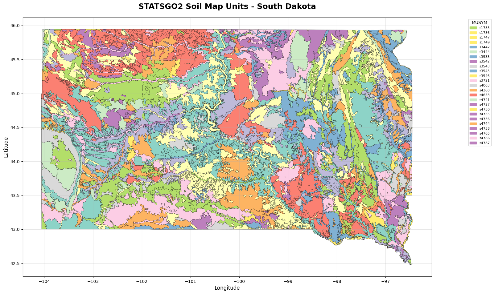
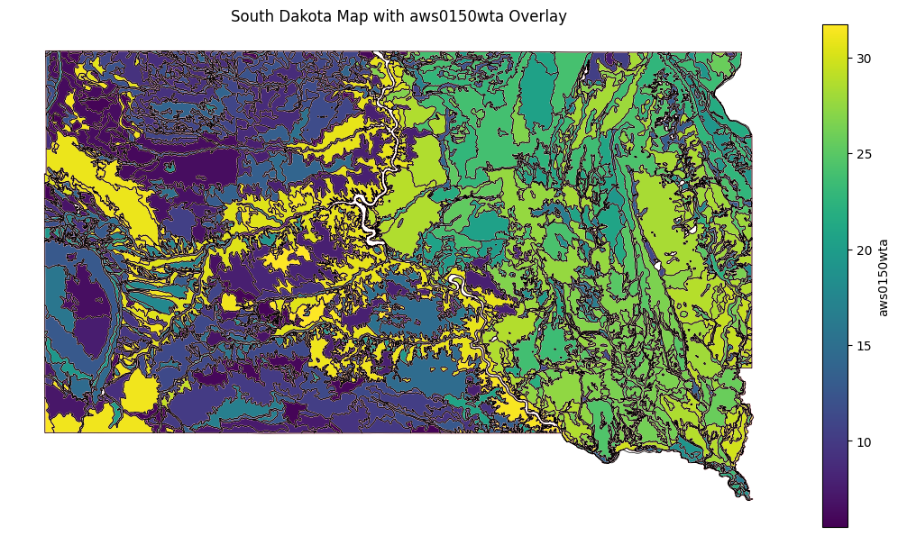

NRCS Soil Survey
Tutorial: Exploring Soil Data from the NRCS Web Soil Survey (WSS)
This notebook demonstrates how to download, extract, and visualize soil data from the Natural Resources Conservation Service (NRCS) Web Soil Survey (WSS). We will focus on the STATSGO2 dataset for South Dakota.
The Web Soil Survey (WSS) is a valuable resource for accessing soil data and information compiled by the National Cooperative Soil Survey.
Here are the links to the data we will be using:
- Link to Data: https://websoilsurvey.sc.egov.usda.gov/DSD/Download/Cache/STATSGO2/wss_gsmsoil_SD_[2016-10-13].zip
- Description of Data: https://www.nrcs.usda.gov/sites/default/files/2022-08/SSURGO-Metadata-Table-Column-Descriptions-Report.pdf
The data is provided as a zip file containing spatial data (shapefiles) and tabular data (text files).
Installing dependencies
We need to install the necessary Python libraries to work with spatial data and dataframes. We will use pandas for data manipulation, geopandas for working with geospatial data, and matplotlib for plotting.
# uncomment the following code
#!pip install pandas==2.2.2 geopandas==0.14.3 fiona==1.9.6 matplotlib==3.8.4 requests==2.32.3 seaborn==0.13.2
Requirement already satisfied: pandas==2.2.2 in /usr/local/lib/python3.11/dist-packages (2.2.2)
Requirement already satisfied: geopandas==0.14.3 in /usr/local/lib/python3.11/dist-packages (0.14.3)
Requirement already satisfied: fiona==1.9.6 in /usr/local/lib/python3.11/dist-packages (1.9.6)
Requirement already satisfied: matplotlib==3.8.4 in /usr/local/lib/python3.11/dist-packages (3.8.4)
Requirement already satisfied: requests==2.32.3 in /usr/local/lib/python3.11/dist-packages (2.32.3)
Requirement already satisfied: seaborn==0.13.2 in /usr/local/lib/python3.11/dist-packages (0.13.2)
Requirement already satisfied: numpy>=1.23.2 in /usr/local/lib/python3.11/dist-packages (from pandas==2.2.2) (2.0.2)
Requirement already satisfied: python-dateutil>=2.8.2 in /usr/local/lib/python3.11/dist-packages (from pandas==2.2.2) (2.9.0.post0)
Requirement already satisfied: pytz>=2020.1 in /usr/local/lib/python3.11/dist-packages (from pandas==2.2.2) (2025.2)
Requirement already satisfied: tzdata>=2022.7 in /usr/local/lib/python3.11/dist-packages (from pandas==2.2.2) (2025.2)
Requirement already satisfied: packaging in /usr/local/lib/python3.11/dist-packages (from geopandas==0.14.3) (24.2)
Requirement already satisfied: pyproj>=3.3.0 in /usr/local/lib/python3.11/dist-packages (from geopandas==0.14.3) (3.7.1)
Requirement already satisfied: shapely>=1.8.0 in /usr/local/lib/python3.11/dist-packages (from geopandas==0.14.3) (2.1.1)
Requirement already satisfied: attrs>=19.2.0 in /usr/local/lib/python3.11/dist-packages (from fiona==1.9.6) (25.3.0)
Requirement already satisfied: certifi in /usr/local/lib/python3.11/dist-packages (from fiona==1.9.6) (2025.7.9)
Requirement already satisfied: click~=8.0 in /usr/local/lib/python3.11/dist-packages (from fiona==1.9.6) (8.2.1)
Requirement already satisfied: click-plugins>=1.0 in /usr/local/lib/python3.11/dist-packages (from fiona==1.9.6) (1.1.1.2)
Requirement already satisfied: cligj>=0.5 in /usr/local/lib/python3.11/dist-packages (from fiona==1.9.6) (0.7.2)
Requirement already satisfied: six in /usr/local/lib/python3.11/dist-packages (from fiona==1.9.6) (1.17.0)
Requirement already satisfied: contourpy>=1.0.1 in /usr/local/lib/python3.11/dist-packages (from matplotlib==3.8.4) (1.3.2)
Requirement already satisfied: cycler>=0.10 in /usr/local/lib/python3.11/dist-packages (from matplotlib==3.8.4) (0.12.1)
Requirement already satisfied: fonttools>=4.22.0 in /usr/local/lib/python3.11/dist-packages (from matplotlib==3.8.4) (4.58.5)
Requirement already satisfied: kiwisolver>=1.3.1 in /usr/local/lib/python3.11/dist-packages (from matplotlib==3.8.4) (1.4.8)
Requirement already satisfied: pillow>=8 in /usr/local/lib/python3.11/dist-packages (from matplotlib==3.8.4) (11.2.1)
Requirement already satisfied: pyparsing>=2.3.1 in /usr/local/lib/python3.11/dist-packages (from matplotlib==3.8.4) (3.2.3)
Requirement already satisfied: charset-normalizer<4,>=2 in /usr/local/lib/python3.11/dist-packages (from requests==2.32.3) (3.4.2)
Requirement already satisfied: idna<4,>=2.5 in /usr/local/lib/python3.11/dist-packages (from requests==2.32.3) (3.10)
Requirement already satisfied: urllib3<3,>=1.21.1 in /usr/local/lib/python3.11/dist-packages (from requests==2.32.3) (2.4.0)
Import packages
Now, let's import the necessary libraries into our notebook.
import os
import zipfile
import pandas as pd
import geopandas as gpd
import matplotlib.pyplot as plt
import requests
import numpy as np
import matplotlib.patches as mpatches
import seaborn as sns
from IPython.display import display
import matplotlib as mpl
Read in Data from WSS
We will now download the data from the Web Soil Survey.
Set the URL of the zip file and the desired local path for the downloaded file and the extraction directory.
url = "https://websoilsurvey.sc.egov.usda.gov/DSD/Download/Cache/STATSGO2/wss_gsmsoil_SD_[2016-10-13].zip"
zip_path = "wss_gsmsoil_SD.zip"
extract_dir = "soil_data_sd"
Display the paths to confirm they are set correctly.
print(f"Downloading from: {url}")
print(f"Local zip file: {zip_path}")
print(f"Extract directory: {extract_dir}")
Downloading from: https://websoilsurvey.sc.egov.usda.gov/DSD/Download/Cache/STATSGO2/wss_gsmsoil_SD_[2016-10-13].zip
Local zip file: wss_gsmsoil_SD.zip
Extract directory: soil_data_sd
Download the zip file from the specified URL.
print("Downloading zip file...")
response = requests.get(url, stream=True)
with open(zip_path, 'wb') as f:
for chunk in response.iter_content(chunk_size=8192):
f.write(chunk)
print(f" Downloaded: {zip_path}")
Downloading zip file...
Downloaded: wss_gsmsoil_SD.zip
Extract the contents of the downloaded zip file to the specified directory.
print(f"\nExtracting to: {extract_dir}")
with zipfile.ZipFile(zip_path, 'r') as zip_ref:
zip_ref.extractall(extract_dir)
print("Extraction complete")
Extracting to: soil_data_sd
✅ Extraction complete
List the files within the extracted directory to see the dataset structure.
print("\nFiles in extracted directory:")
print("-" * 40)
for root, dirs, files in os.walk(extract_dir):
for file in files:
file_path = os.path.join(root, file)
rel_path = os.path.relpath(file_path, extract_dir)
print(f" {rel_path}")
Files in extracted directory:
----------------------------------------
wss_gsmsoil_SD_[2016-10-13]/soil_metadata_us.txt
wss_gsmsoil_SD_[2016-10-13]/readme.txt
wss_gsmsoil_SD_[2016-10-13]/soildb_US_2003.mdb
wss_gsmsoil_SD_[2016-10-13]/soil_metadata_us.xml
wss_gsmsoil_SD_[2016-10-13]/spatial/gsmsoilmu_a_sd.dbf
wss_gsmsoil_SD_[2016-10-13]/spatial/version.txt
wss_gsmsoil_SD_[2016-10-13]/spatial/gsmsoilmu_a_sd.shp
wss_gsmsoil_SD_[2016-10-13]/spatial/gsmsoilmu_a_sd.prj
wss_gsmsoil_SD_[2016-10-13]/spatial/gsmsoilmu_a_sd.shx
wss_gsmsoil_SD_[2016-10-13]/tabular/chstrgrp.txt
wss_gsmsoil_SD_[2016-10-13]/tabular/mstab.txt
wss_gsmsoil_SD_[2016-10-13]/tabular/sdvattribute.txt
wss_gsmsoil_SD_[2016-10-13]/tabular/cfprod.txt
wss_gsmsoil_SD_[2016-10-13]/tabular/cpmat.txt
wss_gsmsoil_SD_[2016-10-13]/tabular/ctxfmoth.txt
wss_gsmsoil_SD_[2016-10-13]/tabular/msrsdet.txt
wss_gsmsoil_SD_[2016-10-13]/tabular/csmoist.txt
wss_gsmsoil_SD_[2016-10-13]/tabular/chfrags.txt
wss_gsmsoil_SD_[2016-10-13]/tabular/cerosnac.txt
wss_gsmsoil_SD_[2016-10-13]/tabular/cstemp.txt
wss_gsmsoil_SD_[2016-10-13]/tabular/sainterp.txt
wss_gsmsoil_SD_[2016-10-13]/tabular/csmorhpp.txt
wss_gsmsoil_SD_[2016-10-13]/tabular/version.txt
wss_gsmsoil_SD_[2016-10-13]/tabular/chaashto.txt
wss_gsmsoil_SD_[2016-10-13]/tabular/muareao.txt
wss_gsmsoil_SD_[2016-10-13]/tabular/csfrags.txt
wss_gsmsoil_SD_[2016-10-13]/tabular/sdvfolder.txt
wss_gsmsoil_SD_[2016-10-13]/tabular/cpwndbrk.txt
wss_gsmsoil_SD_[2016-10-13]/tabular/ltext.txt
wss_gsmsoil_SD_[2016-10-13]/tabular/csmorgc.txt
wss_gsmsoil_SD_[2016-10-13]/tabular/crstrcts.txt
wss_gsmsoil_SD_[2016-10-13]/tabular/chydcrit.txt
wss_gsmsoil_SD_[2016-10-13]/tabular/chtexmod.txt
wss_gsmsoil_SD_[2016-10-13]/tabular/ceplants.txt
wss_gsmsoil_SD_[2016-10-13]/tabular/mucrpyd.txt
wss_gsmsoil_SD_[2016-10-13]/tabular/sacatlog.txt
wss_gsmsoil_SD_[2016-10-13]/tabular/mstabcol.txt
wss_gsmsoil_SD_[2016-10-13]/tabular/chtextur.txt
wss_gsmsoil_SD_[2016-10-13]/tabular/chunifie.txt
wss_gsmsoil_SD_[2016-10-13]/tabular/ctxmoicl.txt
wss_gsmsoil_SD_[2016-10-13]/tabular/chdsuffx.txt
wss_gsmsoil_SD_[2016-10-13]/tabular/chtexgrp.txt
wss_gsmsoil_SD_[2016-10-13]/tabular/sdvfolderattribute.txt
wss_gsmsoil_SD_[2016-10-13]/tabular/ctext.txt
wss_gsmsoil_SD_[2016-10-13]/tabular/cinterp.txt
wss_gsmsoil_SD_[2016-10-13]/tabular/chconsis.txt
wss_gsmsoil_SD_[2016-10-13]/tabular/distlmd.txt
wss_gsmsoil_SD_[2016-10-13]/tabular/cecoclas.txt
wss_gsmsoil_SD_[2016-10-13]/tabular/ccancov.txt
wss_gsmsoil_SD_[2016-10-13]/tabular/comp.txt
wss_gsmsoil_SD_[2016-10-13]/tabular/chstr.txt
wss_gsmsoil_SD_[2016-10-13]/tabular/muaggatt.txt
wss_gsmsoil_SD_[2016-10-13]/tabular/msidxmas.txt
wss_gsmsoil_SD_[2016-10-13]/tabular/csmormr.txt
wss_gsmsoil_SD_[2016-10-13]/tabular/distimd.txt
wss_gsmsoil_SD_[2016-10-13]/tabular/lareao.txt
wss_gsmsoil_SD_[2016-10-13]/tabular/csmorss.txt
wss_gsmsoil_SD_[2016-10-13]/tabular/msidxdet.txt
wss_gsmsoil_SD_[2016-10-13]/tabular/cfprodo.txt
wss_gsmsoil_SD_[2016-10-13]/tabular/legend.txt
wss_gsmsoil_SD_[2016-10-13]/tabular/msrsmas.txt
wss_gsmsoil_SD_[2016-10-13]/tabular/ctreestm.txt
wss_gsmsoil_SD_[2016-10-13]/tabular/ccrpyd.txt
wss_gsmsoil_SD_[2016-10-13]/tabular/cgeomord.txt
wss_gsmsoil_SD_[2016-10-13]/tabular/msdomdet.txt
wss_gsmsoil_SD_[2016-10-13]/tabular/cpmatgrp.txt
wss_gsmsoil_SD_[2016-10-13]/tabular/chpores.txt
wss_gsmsoil_SD_[2016-10-13]/tabular/chorizon.txt
wss_gsmsoil_SD_[2016-10-13]/tabular/msdommas.txt
wss_gsmsoil_SD_[2016-10-13]/tabular/cmonth.txt
wss_gsmsoil_SD_[2016-10-13]/tabular/distmd.txt
wss_gsmsoil_SD_[2016-10-13]/tabular/sdvalgorithm.txt
wss_gsmsoil_SD_[2016-10-13]/tabular/ctxfmmin.txt
wss_gsmsoil_SD_[2016-10-13]/tabular/chtext.txt
wss_gsmsoil_SD_[2016-10-13]/tabular/mutext.txt
wss_gsmsoil_SD_[2016-10-13]/tabular/mapunit.txt
wss_gsmsoil_SD_[2016-10-13]/tabular/cdfeat.txt
To get a little background on the files and data we can view the readme file
# Umcomment the following code to see the readme
# readme_file_path = os.path.join(extract_dir, "wss_gsmsoil_SD_[2016-10-13]", "readme.txt")
# with open(readme_file_path, 'r') as f:
# readme_content = f.read()
# print(readme_content)
********************************************************************************
**** Index
********************************************************************************
Export Contents
Export Types
Area of Interest (AOI)
SSURGO
STATSGO2
Unzipping Your Export
Importing the Tabular Data into a SSURGO Template Database
Why Import the Tabular Data into a SSURGO Template Database?
Microsoft Access Version Considerations and Security Related Issues
Trusted Locations
Macro Settings
Importing Tabular Data
Spatial Data
Spatial Data Format and Coordinate System
Utilizing Soil Spatial Data
Terminology
Area of Interest (AOI)
Soil Survey Area
SSURGO Template Database
SSURGO
STATSGO2
Obtaining Help
********************************************************************************
**** Export Contents
********************************************************************************
This export includes the following U.S. General Soil Map data:
Spatial extent: South Dakota
SSA symbol: US
SSA name: United States
SSA version: 3
SSA version est.: 10/13/2016 12:28:22 PM
Spatial format: ESRI Shapefile
Coordinate system: Geographic Coordinate System (WGS84)
This export also includes the following MS Access SSURGO template database:
Template DB name: soildb_US_2003.mdb
Template DB version: 36
Template DB state: US
MS Access version: Access 2003
********************************************************************************
**** Export Types
********************************************************************************
Three types of data exports are available. See the "Terminology" section for
descriptions of "Area of Interest," "SSURGO," and "STATSGO2."
****************************************************************************
**** Area of Interest (AOI)
****************************************************************************
The data in an Area of Interest export include the following for a
user-defined area of interest:
Soil Tabular Data
Map Unit Polygons (where available)
Map Unit Lines (where available)
Map Unit Points (where available)
Special Feature Lines (where available)
Special Feature Points (where available)
Special Feature Descriptions (where available)
Soil Thematic Map Data (where available)
An AOI export can be downloaded from the "Your AOI (SSURGO)" section under
the "Download Soils Data" tab in the Web Soil Survey.
The name of the export zip file will be in the form
wss_aoi_YYYY-MM-DD_HH-MM-SS.zip, e.g. wss_aoi_2012-09-24_12-59-37.zip.
Note that the data for an Area of Interest is always SSURGO data.
Currently, the Web Soil Survey does not include an option to create an area
of interest for STATSGO2 data.
****************************************************************************
**** SSURGO
****************************************************************************
The data in a SSURGO export include the following for a soil survey area:
Soil Tabular Data
Soil Survey Area Boundary Polygon
Map Unit Polygons (where available)
Map Unit Lines (where available)
Map Unit Points (where available)
Special Feature Lines (where available)
Special Feature Points (where available)
Special Feature Descriptions (where available)
A SSURGO export can be downloaded from the "Soil Survey Area (SSURGO)"
section under the "Download Soils Data" tab in the Web Soil Survey.
The export zip file will be named in the form soil_**###.zip, where ** is
a two character state or territory Federal Information Processing Standard
(FIPS) code, in uppercase, and ### is a three digit, zero-filled integer,
e.g. soil_NE079.zip.
****************************************************************************
**** STATSGO2
****************************************************************************
The data included in a STATSGO2 export include the following:
Soil Tabular Data
Map Unit Polygons
A STATSGO2 export can be downloaded from the "U.S. General Soil Map
(STATSGO2)" section under the "Download Soils Data" tab in the Web Soil
Survey.
If data for the entire STATSGO2 coverage is downloaded, the export zip file
will be named gmsoil_us.zip.
If data for only a single state is downloaded, the export zip file will be
named in the form gmsoil_**.zip, where ** is a two character state FIPS
code in lowercase, e.g. gmsoil_ne.zip.
********************************************************************************
**** Unzipping Your Export
********************************************************************************
See the "Terminology" section for descriptions of a "Soil Survey Area" and a
"SSURGO template database."
Each data export (see "Export Types" section) is provided in a single zip file.
The file unzips to a set of directories and files. The following example is
typical (a copy of soil_metadata_*.txt and soil_metadata_*.xml will be present
for each SSURGO soil survey area included in an export):
spatial (a directory)
tabular (a directory)
thematic (a directory, only present in AOI exports)
readme.txt (an instance of this document)
soil_metadata_*.txt
soil_metadata_*.xml
soildb_*.mdb (a conditionally present SSURGO template database)
The spatial data files for your export, if any, will reside in a directory
named "spatial."
The tabular data files for your export will reside in a directory named
"tabular."
The thematic map data files for your export, if any, will reside in a directory
named "thematic."
The readme.txt file is an instance of the file you are currently reading.
Except for the "Export Contents" section, this file is identical for all
exports.
The soil_metadata_*.txt file contains Federal Geographic Data Committee (FGDC)
metadata (http://www.fgdc.gov/metadata) for each soil survey area, state, or
country for which data was included in your export. The file is in text
(ASCII) format. The "*" will be replaced by a soil survey area symbol
(e.g. "ne079"), "us," or a two character U.S. state FIPS code in lowercase.
Your export may include more than one of these files.
The soil_metadata_*.xml file contains Federal Geographic Data Committee (FGDC)
metadata (http://www.fgdc.gov/metadata) for each soil survey area, state, or
country for which data was included in your export. The file is in XML format.
The "*" will be replaced by either a soil survey area symbol (e.g. "ne079"),
"us," or a two character U.S. state FIPS code in lowercase. Your export may
include more than one of these files.
The soildb_*.mdb file is an instance of a SSURGO template database. The "*"
will be replaced by either "US" or a two character state or territory FIPS code
in uppercase. This file will be present unless you specifically requested an
export that doesn't include a SSURGO template database.
********************************************************************************
**** Importing the Tabular Data into a SSURGO Template Database
********************************************************************************
See the "Terminology" section for a description of "SSURGO template database."
****************************************************************************
**** Why Import the Tabular Data into a SSURGO Template Database?
****************************************************************************
The tabular data is exported as a set of files in "ASCII delimited" format.
These ASCII delimited files do not include column headers. Typically, it
is not feasible to work with the tabular data in this format. Instead, you
should import the data from these files into the accompanying SSURGO
template database.
Importing the data into a SSURGO template database establishes the proper
relationships between the various soil survey data entities. It also
provides access to a number of prewritten reports that display related data
in a meaningful way and gives you the option to create your own queries and
reports. Creating queries and reports requires additional knowledge by the
user.
****************************************************************************
**** Microsoft Access Version Considerations and Security Related Issues
****************************************************************************
All SSURGO template databases are in Microsoft Access 2002/2003 format.
Although this doesn't prevent you from opening them in Access 2007 or
Access 2010, the default security settings for Access 2007 or 2010 may
initially prevent the macros in the template database from working. If you
get a security warning when you open a SSURGO template database, e.g. a
warning that the database is read-only, you may need to change your
Microsoft Access security settings.
To check and/or adjust your Microsoft Access security settings in Access
2007 or 2010, start Access, click the Office Button at the top left of the
Access window, and then click the button labeled "Access Options" at the
bottom of the form. From the "Access Options" dialog, select
"Trust Center" from the options to the left, and then select the button
labeled "Trust Center Settings" to the right.
After selecting "Trusted Center Settings," you can address a security issue
two different ways. From the left side of the Trust Center dialog, select
"Trusted Locations" or "Macro Settings."
************************************************************************
**** Trusted Locations
************************************************************************
You can move the SSURGO template database to an existing trusted
location (if a trusted location has already been created), or you can
add a new trusted location and move the SSURGO template database to
that new trusted location.
************************************************************************
**** Macro Settings
************************************************************************
Selecting "Enable All Macros" will allow the macros in the SSURGO
template database to run, but not without hazard. Note the associated
warning: "not recommended; potentially dangerous code can run." The
SSURGO template database does not contain hazardous code, but other
databases might.
If you have trouble using the SSURGO template database, see the
"Obtaining Help" section for information on how to contact the Soils
Hotline.
****************************************************************************
**** Importing Tabular Data
****************************************************************************
When you open a SSURGO template database, the Import Form should display
automatically if there are no Microsoft Access security related issues.
To import the soil tabular data into the SSURGO template database, enter
the location of the "tabular" directory into the blank in the Import Form.
Use the fully qualified pathname to the "tabular" directory that you
unzipped from your export file.
For example, if your export file was named wss_aoi_2012-09-24_12-59-37.zip
and you unzipped the file to C:\soildata\, the fully qualified pathname
would be C:\soildata\wss_aoi_2012-09-24_12-59-37\tabular.
The pathname between C:\soildata\ and \tabular varies by export type. It
also varies:
for Area of Interest exports by export date and time,
for SSURGO exports by the selected soil survey area, and
for STATSGO2 exports by your selection of data for the entire U.S. or
for a single state.
After entering the fully qualified pathname, click the "OK" button. The
import process will start. The duration of the import process depends on
the amount of data being imported. Most imports take less than 5 minutes,
and many take less than 1 minute. The import for STATSGO2 data for the
entire United States takes longer.
Once the import process completes, the Soil Reports Form should display.
********************************************************************************
**** Spatial Data
********************************************************************************
****************************************************************************
**** Spatial Data Format and Coordinate System
****************************************************************************
All spatial data is provided in ESRI Shapefile format in WGS84 geographic
coordinates.
****************************************************************************
**** Utilizing Soil Spatial Data
****************************************************************************
Utilizing soil spatial data without having access to Geographic Information
System (GIS) software is effectively impossible. Even if you have access
to GIS software, relating the soil spatial data to the corresponding soil
tabular data can be complicated.
For people who have access to supported versions of ESRI's ArcGIS software,
we provide a Windows client application that is capable of creating soil
thematic maps using ArcMap and the Windows client application. The name of
the application is "Soil Data Viewer." For additional information see
http://www.nrcs.usda.gov/wps/portal/nrcs/detailfull/soils/home/?cid=nrcs142p2_053620.
An AOI export may contain thematic map data from Web Soil Survey. Each
thematic map (soil property or interpretation) that was created for the AOI
generates a set of files in the "thematic" directory of the export. An
experienced GIS user can join a ratings file from the export with the
mapunits in the spatial data to reproduce the colored thematic map.
********************************************************************************
**** Terminology
********************************************************************************
****************************************************************************
**** Area of Interest (AOI)
****************************************************************************
In the Web Soil Survey, you can create an ad hoc "area of interest" by
using the navigation map and its associated tools. You can pan and zoom to
a desired geographic location and then use the AOI drawing tools to
manually select an "area of interest." An "area of interest" must be a
single polygon and the maximum area of that polygon (measured in acres) is
limited.
****************************************************************************
**** Soil Survey Area
****************************************************************************
The SSURGO soil data for the U.S. and its territories are broken up into
over 3,000 soil survey areas. A soil survey area commonly coincides with a
single county but may coincide with all or part of multiple counties and
may span more than one state.
A soil survey area is identified by a "survey area symbol." The symbol is
a two character state or territory FIPS code combined with a zero-filled,
three digit number. For example, "NE079" is the survey area symbol for
Hall County, Nebraska.
Although the STATSGO2 soil data is not partitioned into soil survey areas,
STATSGO2 soil data can be downloaded for a particular state or territory.
****************************************************************************
**** SSURGO Template Database
****************************************************************************
A SSURGO template database is a Microsoft Access database in which the
tables and columns conform to the current SSURGO standard. Exported soil
tabular data can be imported into a SSURGO template database.
A SSURGO template database includes a number of prewritten reports that
display related data in a meaningful way. You also have the option of
creating your own queries and reports in the database. Creating queries
and reports requires additional knowledge.
In addition to the national SSURGO template database, many state-specific
SSURGO template databases are available. They typically include additional
state-specific reports.
Whenever you export data from the Web Soil Survey, the most appropriate
SSURGO template database is automatically included.
****************************************************************************
**** SSURGO
****************************************************************************
The SSURGO standard encompasses both tabular and spatial data. SSURGO
spatial data duplicates the original soil survey maps. This level of
mapping is designed for use by landowners and townships and for
county-based natural resource planning and management. The original
mapping scales generally ranged from 1:12,000 to 1:63,360. The original
maps from soil survey manuscripts were recompiled to scales of 1:12,000 or
1:24,000 for digitizing into the SSURGO format. SSURGO is the most
detailed level of soil mapping published by the National Cooperative Soil
Survey.
****************************************************************************
**** STATSGO2
****************************************************************************
The U.S. General Soil Map consists of general soil association units. It
was developed by the National Cooperative Soil Survey and supersedes the
State Soil Geographic (STATSGO) dataset published in 1994. STATSGO2 was
released in July 2006 and differs from the original STATSGO in that
individual state legends were merged into a single national legend,
line-join issues at state boundaries were resolved, and some attribute
updates and area updates were made. STATSGO2 consists of a broad-based
inventory of soils and nonsoil areas that occur in a repeatable pattern on
the landscape and that can be cartographically shown at the scale used for
mapping (1:250,000 in the continental U.S., Hawaii, Puerto Rico, and the
Virgin Islands and 1:1,000,000 in Alaska).
The same tabular data model is used by both SSURGO and STATSGO2. STATSGO2,
however, does not include soil interpretations. The "cointerp" table in
STATSGO2 will therefore always be empty.
********************************************************************************
**** Obtaining Help
********************************************************************************
To learn about the capabilities of a SSURGO template database, open the
database, select the Microsoft Access "Reports" tab, and then double click the
report titled "How to Understand and Use this Database."
If you require additional assistance, or have any questions whatsoever, please
contact the Soils Hotline (soilshotline@lin.usda.gov).
Find shapefiles in the extracted directory
We are interested in the spatial data, which is typically stored in shapefiles (.shp). Let's find the shapefiles within the extracted data.
You can run the below code to find the shapefiles (.shp) or you can look throught the outputed information above for files ending in (.shp)
shapefiles = []
for root, dirs, files in os.walk(extract_dir):
for file in files:
if file.endswith('.shp'):
shapefiles.append(os.path.join(root, file))
print(f"Found {len(shapefiles)} shapefiles:")
for shp in shapefiles:
print(f" - {os.path.relpath(shp, extract_dir)}")
Found 1 shapefiles:
- wss_gsmsoil_SD_[2016-10-13]/spatial/gsmsoilmu_a_sd.shp
Load the soil shapefile
The main soil data is usually contained in a shapefile with a name indicating the spatial extent (e.g., gsmsoilmu_a_sd.shp for South Dakota). We will load this shapefile into a GeoDataFrame using geopandas.
main_shp = os.path.join(extract_dir, "wss_gsmsoil_SD_[2016-10-13]", "spatial", "gsmsoilmu_a_sd.shp")
gdf = gpd.read_file(main_shp)
Examine the Data
Let's take a closer look at the data we loaded into the GeoDataFrame.
Display the first few rows of the GeoDataFrame to get a quick preview of the data.
pd.set_option('display.max_columns', None) #Show all columns
display(gdf.head(5)) # Show only the first 5 rows
| AREASYMBOL | SPATIALVER | MUSYM | MUKEY | geometry | |
|---|---|---|---|---|---|
| 0 | US | 3 | s6871 | 672359 | POLYGON ((-96.75075 43.50416, -96.75365 43.504... |
| 1 | US | 3 | s6793 | 672281 | POLYGON ((-103.49977 43.32849, -103.50432 43.3... |
| 2 | US | 3 | s6792 | 672280 | POLYGON ((-102.95403 44.33908, -102.95738 44.3... |
| 3 | US | 3 | s6792 | 672280 | POLYGON ((-102.69247 44.36311, -102.69413 44.3... |
| 4 | US | 3 | s6861 | 672349 | POLYGON ((-97.37897 42.86556, -97.38019 42.868... |
We can look throught this description of the data: https://www.nrcs.usda.gov/sites/default/files/2022-08/SSURGO-Metadata-Table-Column-Descriptions-Report.pdf to find what each column means
Visualize Soil Data
Let's create a basic map of the soil map units (MUSYM) in South Dakota.
# Create the map
soil_column = "MUSYM"
fig, ax = plt.subplots(1, 1, figsize=(16, 12))
# Get unique soil types and create color map
unique_soils = gdf[soil_column].unique()
colors = plt.cm.Set3(np.linspace(0, 1, len(unique_soils)))
color_dict = dict(zip(unique_soils, colors))
# Plot soil polygons
gdf.plot(ax=ax, legend=False,
color=[color_dict.get(x, 'gray') for x in gdf[soil_column]],
edgecolor='black', linewidth=0.3)
# Customize the map
ax.set_title('STATSGO2 Soil Map Units - South Dakota',
fontsize=18, fontweight='bold', pad=20)
ax.set_xlabel('Longitude', fontsize=12)
ax.set_ylabel('Latitude', fontsize=12)
ax.grid(True, alpha=0.3)
# Add legend (top 25 soil types)
legend_elements = [mpatches.Patch(color=color_dict[soil], label=soil)
for soil in sorted(unique_soils)[:25]]
ax.legend(handles=legend_elements, loc='upper right',
bbox_to_anchor=(1.15, 1), fontsize=8, title=f'{soil_column}')
plt.tight_layout()
plt.show()

Loading and Examining Tabular Data
In addition to the spatial data, the WSS provides tabular data with detailed soil properties. We'll load the muaggatt.txt file, which contains aggregated attribute data for the map units.
Since this file does not have a header row, we need to provide the column names manually. These names are based on the data description link provided earlier in the notebook.
# Define the column names for muaggatt.csv (no headers in file)
columns = [
"musym", "muname", "mustatus", "slopegraddcp", "slopegradwta", "brockdepmin",
"wtdepannmin", "wtdepaprjunmin", "flodfreqdcd", "flodfreqmax", "pondfreqprs",
"aws025wta", "aws050wta", "aws0100wta", "aws0150wta", "drclassdcd", "drclasswettest",
"hydgrpdcd", "iccdcd", "iccdcdpct", "niccdcd", "niccdcdpct", "engdwobdcd",
"engdwbdcd", "engdwbll", "engdwbml", "engstafdcd", "engstafll", "engstafml",
"engsldcd", "engsldcp", "englrsdcd", "engcmssdcd", "engcmssmp", "urbrecptdcd",
"urbrecptwta", "forpehrtdcp", "hydclprs", "awmmfpwwta", "mukey"
]
# Load the muaggatt.csv file (update the path if needed)
muaggatt_path = r"soil_data_sd/wss_gsmsoil_SD_[2016-10-13]/tabular/muaggatt.txt" # or .txt if that's your file extension
df = pd.read_csv(muaggatt_path, sep="|", engine="python", header=None, names=columns, dtype=str)
Now that the data is loaded, let's inspect the first few rows and check the column names to ensure everything loaded correctly.
# Show the first 5 rows of the DataFrame with all columns
print("First 5 rows of df with all columns:")
pd.set_option('display.max_columns', None) #Show all columns
display(df.head(5)) # Show only the first 5 rows
First 5 rows of df with all columns:
| musym | muname | mustatus | slopegraddcp | slopegradwta | brockdepmin | wtdepannmin | wtdepaprjunmin | flodfreqdcd | flodfreqmax | pondfreqprs | aws025wta | aws050wta | aws0100wta | aws0150wta | drclassdcd | drclasswettest | hydgrpdcd | iccdcd | iccdcdpct | niccdcd | niccdcdpct | engdwobdcd | engdwbdcd | engdwbll | engdwbml | engstafdcd | engstafll | engstafml | engsldcd | engsldcp | englrsdcd | engcmssdcd | engcmssmp | urbrecptdcd | urbrecptwta | forpehrtdcp | hydclprs | awmmfpwwta | mukey | |
|---|---|---|---|---|---|---|---|---|---|---|---|---|---|---|---|---|---|---|---|---|---|---|---|---|---|---|---|---|---|---|---|---|---|---|---|---|---|---|---|---|
| 0 | s8369 | Water (s8369) | NaN | NaN | NaN | NaN | NaN | NaN | NaN | NaN | 0 | NaN | NaN | NaN | NaN | NaN | NaN | NaN | NaN | 100 | NaN | 100 | NaN | NaN | NaN | NaN | NaN | NaN | NaN | NaN | NaN | NaN | NaN | NaN | NaN | NaN | NaN | 0 | NaN | 657964 |
| 1 | s4003 | Pring-Assinniboine-Archin (s4003) | NaN | 5 | 7.5 | NaN | NaN | NaN | NaN | NaN | 0 | 3.83 | 7.21 | 12.48 | 16.89 | Well drained | NaN | B | NaN | 46 | 4 | 41 | NaN | NaN | NaN | NaN | NaN | NaN | NaN | NaN | NaN | NaN | NaN | NaN | NaN | NaN | NaN | 0 | NaN | 664040 |
| 2 | s4360 | Neldore-Marvan-Bascovy (s4360) | NaN | 4 | 7.4 | 38 | NaN | NaN | NaN | NaN | 0 | 3.76 | 7.01 | 10.61 | 13.28 | Well drained | Well drained | D | NaN | 60 | 6 | 42 | NaN | NaN | NaN | NaN | NaN | NaN | NaN | NaN | NaN | NaN | NaN | NaN | NaN | NaN | NaN | 0 | NaN | 664397 |
| 3 | s4653 | Winler-Orella-Epsie (s4653) | NaN | 17 | 18.4 | 38 | NaN | NaN | NaN | NaN | 0 | 2.64 | 4.66 | 5.33 | 5.69 | Well drained | Well drained | D | NaN | 98 | 6 | 54 | NaN | NaN | NaN | NaN | NaN | NaN | NaN | NaN | NaN | NaN | NaN | NaN | NaN | NaN | NaN | 0 | NaN | 664690 |
| 4 | s4721 | Peever-Overly-Nutley-Fargo-Dovray (s4721) | NaN | 2 | 1.7 | NaN | 153 | 153 | NaN | NaN | 0 | 4.43 | 8.44 | 16.15 | 23.39 | Well drained | Moderately well drained | C | NaN | 100 | 2 | 82 | NaN | NaN | NaN | NaN | NaN | NaN | NaN | NaN | NaN | NaN | NaN | NaN | NaN | NaN | NaN | 36 | NaN | 665014 |
We can see from the output that the muaggatt.txt file has been loaded into a pandas DataFrame and the columns are named according to the list we provided. The mukey column is the unique identifier for each map unit and will be used to link this tabular data to the spatial data.
Before merging the tabular data with the spatial GeoDataFrame, let's standardize the column names in both DataFrames by converting them to lowercase and removing leading/trailing whitespace. This helps prevent issues during the merge operation.
Now, let's merge the muaggatt DataFrame (df) with the soil_gdf GeoDataFrame (gdf) based on the common mukey column. We will use a left merge to keep all the spatial features and add the corresponding soil attributes.
After merging, we will display the first few rows of the merged GeoDataFrame to see the added columns.
df.columns = df.columns.str.lower().str.strip()
gdf.columns = gdf.columns.str.lower().str.strip()
print("muaggatt columns before standardizing:", df.columns.tolist())
print("geojson columns before standardizing:", gdf.columns.tolist())
gdf = gdf.merge(df, on="mukey", how="left")
muaggatt columns before standardizing: ['musym', 'muname', 'mustatus', 'slopegraddcp', 'slopegradwta', 'brockdepmin', 'wtdepannmin', 'wtdepaprjunmin', 'flodfreqdcd', 'flodfreqmax', 'pondfreqprs', 'aws025wta', 'aws050wta', 'aws0100wta', 'aws0150wta', 'drclassdcd', 'drclasswettest', 'hydgrpdcd', 'iccdcd', 'iccdcdpct', 'niccdcd', 'niccdcdpct', 'engdwobdcd', 'engdwbdcd', 'engdwbll', 'engdwbml', 'engstafdcd', 'engstafll', 'engstafml', 'engsldcd', 'engsldcp', 'englrsdcd', 'engcmssdcd', 'engcmssmp', 'urbrecptdcd', 'urbrecptwta', 'forpehrtdcp', 'hydclprs', 'awmmfpwwta', 'mukey']
geojson columns before standardizing: ['areasymbol', 'spatialver', 'musym', 'mukey', 'geometry']
pd.set_option('display.max_columns', None) #Show all columns
display(gdf.head(5)) # Show only the first 5 rows
print("geojson columns before standardizing:", gdf.columns.tolist())
| areasymbol | spatialver | musym_x | mukey | geometry | musym_y | muname | mustatus | slopegraddcp | slopegradwta | brockdepmin | wtdepannmin | wtdepaprjunmin | flodfreqdcd | flodfreqmax | pondfreqprs | aws025wta | aws050wta | aws0100wta | aws0150wta | drclassdcd | drclasswettest | hydgrpdcd | iccdcd | iccdcdpct | niccdcd | niccdcdpct | engdwobdcd | engdwbdcd | engdwbll | engdwbml | engstafdcd | engstafll | engstafml | engsldcd | engsldcp | englrsdcd | engcmssdcd | engcmssmp | urbrecptdcd | urbrecptwta | forpehrtdcp | hydclprs | awmmfpwwta | |
|---|---|---|---|---|---|---|---|---|---|---|---|---|---|---|---|---|---|---|---|---|---|---|---|---|---|---|---|---|---|---|---|---|---|---|---|---|---|---|---|---|---|---|---|---|
| 0 | US | 3 | s6871 | 672359 | POLYGON ((-96.75075 43.50416, -96.75365 43.504... | s6871 | Graceville-Dempster (s6871) | NaN | 1 | 1.5 | NaN | NaN | NaN | NaN | NaN | 0 | 5.21 | 10.22 | 19.29 | 26.29 | Well drained | Well drained | B | NaN | 96 | 2 | 50 | NaN | NaN | NaN | NaN | NaN | NaN | NaN | NaN | NaN | NaN | NaN | NaN | NaN | NaN | NaN | 8 | NaN |
| 1 | US | 3 | s6793 | 672281 | POLYGON ((-103.49977 43.32849, -103.50432 43.3... | s6793 | Tilford-Nevee (s6793) | NaN | 5 | 14 | NaN | NaN | NaN | NaN | NaN | 0 | 4.6 | 8.67 | 16.17 | 23.26 | Well drained | Well drained | B | NaN | 100 | 3 | 36 | NaN | NaN | NaN | NaN | NaN | NaN | NaN | NaN | NaN | NaN | NaN | NaN | NaN | NaN | NaN | 1 | NaN |
| 2 | US | 3 | s6792 | 672280 | POLYGON ((-102.95403 44.33908, -102.95738 44.3... | s6792 | Satanta-Pierre-Nunn (s6792) | NaN | 4 | 6.8 | NaN | NaN | NaN | NaN | NaN | 0 | 4.16 | 7.94 | 14.91 | 21.24 | Well drained | Well drained | C | NaN | 81 | 3 | 61 | NaN | NaN | NaN | NaN | NaN | NaN | NaN | NaN | NaN | NaN | NaN | NaN | NaN | NaN | NaN | 0 | NaN |
| 3 | US | 3 | s6792 | 672280 | POLYGON ((-102.69247 44.36311, -102.69413 44.3... | s6792 | Satanta-Pierre-Nunn (s6792) | NaN | 4 | 6.8 | NaN | NaN | NaN | NaN | NaN | 0 | 4.16 | 7.94 | 14.91 | 21.24 | Well drained | Well drained | C | NaN | 81 | 3 | 61 | NaN | NaN | NaN | NaN | NaN | NaN | NaN | NaN | NaN | NaN | NaN | NaN | NaN | NaN | NaN | 0 | NaN |
| 4 | US | 3 | s6861 | 672349 | POLYGON ((-97.37897 42.86556, -97.38019 42.868... | s6861 | Wentworth-Ethan-Egan (s6861) | NaN | 4 | 3.6 | NaN | NaN | NaN | NaN | NaN | 0 | 5.01 | 9.74 | 19.04 | 28.13 | Well drained | Well drained | B | NaN | 92 | 2 | 36 | NaN | NaN | NaN | NaN | NaN | NaN | NaN | NaN | NaN | NaN | NaN | NaN | NaN | NaN | NaN | 13 | NaN |
geojson columns before standardizing: ['areasymbol', 'spatialver', 'musym_x', 'mukey', 'geometry', 'musym_y', 'muname', 'mustatus', 'slopegraddcp', 'slopegradwta', 'brockdepmin', 'wtdepannmin', 'wtdepaprjunmin', 'flodfreqdcd', 'flodfreqmax', 'pondfreqprs', 'aws025wta', 'aws050wta', 'aws0100wta', 'aws0150wta', 'drclassdcd', 'drclasswettest', 'hydgrpdcd', 'iccdcd', 'iccdcdpct', 'niccdcd', 'niccdcdpct', 'engdwobdcd', 'engdwbdcd', 'engdwbll', 'engdwbml', 'engstafdcd', 'engstafll', 'engstafml', 'engsldcd', 'engsldcp', 'englrsdcd', 'engcmssdcd', 'engcmssmp', 'urbrecptdcd', 'urbrecptwta', 'forpehrtdcp', 'hydclprs', 'awmmfpwwta']
As you can see in the output above, the GeoDataFrame now includes the attribute columns from the muaggatt.txt file, appended to the original spatial data. We can now use these attributes for mapping and analysis.
Visualizing Soil Attributes
With the merged data, we can now create maps that visualize specific soil attributes across South Dakota. Let's create a map showing the available water storage at 0-150 cm depth (aws0150wta). This attribute is important for understanding soil moisture availability for plants.
soil_column = 'aws0150wta'
gdf_overlay = gdf[~gdf[soil_column].isna()].copy()
# Bin the data into 25 ranges (optional, for discrete bins)
num_bins = 25
gdf_overlay['binned'] = pd.cut(
gdf_overlay[soil_column].astype(float),
bins=num_bins,
include_lowest=True
)
# Set up colormap and normalization
cmap = plt.cm.viridis
norm = mpl.colors.Normalize(
vmin=gdf_overlay[soil_column].astype(float).min(),
vmax=gdf_overlay[soil_column].astype(float).max()
)
# Plot base map
fig, ax = plt.subplots(1, 1, figsize=(12, 8))
gdf.boundary.plot(ax=ax, color='black', linewidth=0.5)
# Plot overlay (use the original column for a smooth colorbar)
gdf_overlay.plot(
column=soil_column,
ax=ax,
legend=False, # We'll add a custom colorbar
cmap=cmap,
edgecolor='pink'
)
# Create ScalarMappable and add colorbar
sm = mpl.cm.ScalarMappable(cmap=cmap, norm=norm)
sm._A = [] # Required for older matplotlib versions
cbar = fig.colorbar(sm, ax=ax, fraction=0.03, pad=0.04)
cbar.set_label(soil_column)
ax.set_title(f'South Dakota Map with {soil_column} Overlay')
ax.set_axis_off()
plt.show()
